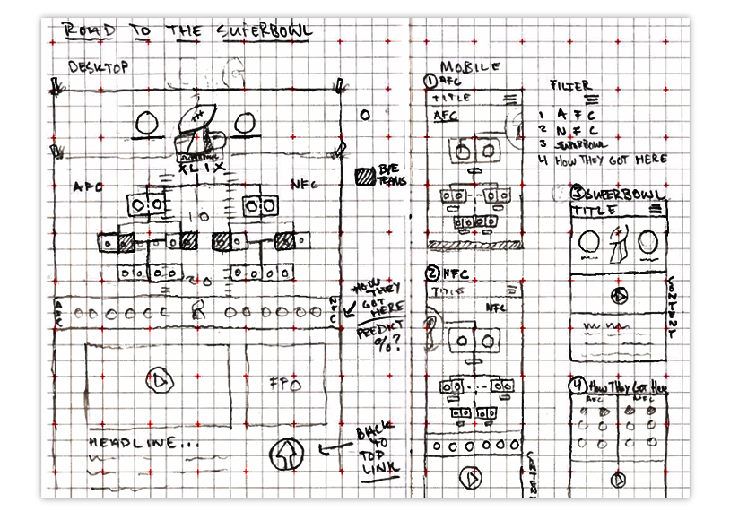
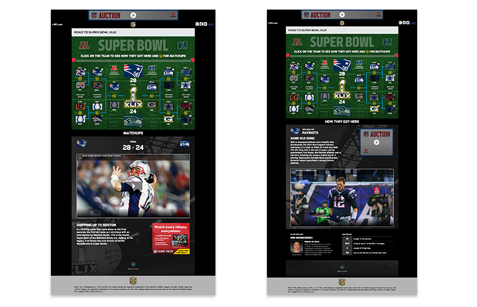

 <!DOCTYPE html>

<html>

<title>Super Bowl Product at NFL Media, JenningsHanna.com, Jennings Hanna is an Interaction Designer and Content Strategist</title>

<meta name="viewport" content="width=device-width, initial-scale=1">

 <!-- CSS RESET ERIC MEYER
 <link rel="stylesheet" type="text/css" href="assets/reset.css" />
 -->
<link rel="shortcut icon" href="/favicon.ico" type="image/x-icon">
<link rel="icon" href="/favicon.ico" type="image/x-icon">
 
 <!-- Skeleton CSS -->
 <link rel="stylesheet" href="assets/skeleton/normalize.css">
 <link rel="stylesheet" href="assets/skeleton/skeleton.css">
 
 <!-- MY CSS -->
 <link rel="stylesheet" type="text/css" href="assets/style.css" />
 
 <!-- GOOGLE WEB FONT - 'Open Sans' Normal 400 -->
 <link href='http://fonts.googleapis.com/css?family=Open+Sans' rel='stylesheet' type='text/css'>
 
  <!-- FONT AWESOME -->
 <link rel="stylesheet" href="https://maxcdn.bootstrapcdn.com/font-awesome/4.4.0/css/font-awesome.min.css">

</html>

<body >
	<div class="container top">
		<div id="pencil"></div>
		<div class="row">
			<div class="twelve columns">
		<p class="color"><a href="enter.html"></a>Welcome to my case study of <span class="name">NFL.COM Super Bowl Bracket.</span> I was the senior designer on the project and I bridged between many other teams including product, features, and graphics. I set out to build a new bracket that captured visitors with loads of content and simple interactions. It was also the first time the bracket was built to be responsive to mobile and tablet devices.</p>
				
				<p class="color">As it goes every year, there are playoffs that need a bracket. I have always be interested in brackets and I like to use the when I following a sporting competition. They're a strange mix of story and data visualization really.</p>
				
				<p class="color">The project began with the sketch above which I created after holding multiple workshops with the content team. We needed to understand what content was already in the pipeline and see how that might mesh with the new bracket. We then went to the product team to get their input on the interface types that we generating the most traffic and they told us to build mobile first. So we did, I lead the team to think about mobile users relationships to this type of content. In response we created a mobile design with large finger sized buttons, responsive interface that shortened the content into three containers when on a mobile device, and purposefully short snippets of content for the consumer on-the-go that deep linked to more detailed information.</p>
				
				<p class="color">The bracket was featured on the NFL.COM homepage for the 2015 playoff and headlined the SuperBowl.com site. This content was consumed by million of NFL fans and will be again next year and the year after. Well, until they build a new Super Bowl bracket. You can take the bracket for a stroll by clicking<a href="http://www.nfl.com/labs/rr/roadtosuperbowl/roadtosuperbowl" target="_blank"> here</a>.</p>
			</div>
		</div>
		<div class="row">
			<div class="offset-by-four four columns"></div>
		</div>
		<div class="row">
			<div id="pencil2"></div>
		</div>
		<div class="row portfolio-cards">
			<div class="four columns">
				<div class="card cornell">
					<p class="color"><a href="cornell.html">Meyer Cancer Center NYC</a></p>
				</div>
			</div>
			<div class="four columns">
				<div class="card deja">
					<p class="color"><a href="deja.html">Send yourself postcards in the future</a></p>
				</div>
			</div>
			<div class="four columns">
				<div class="card super-bowl">
					<p class="color"><a href="super-bowl.html">Super Bowl Bracket</a></p>
				</div>
			</div>
		</div>
	</div>
	
<script src="https://ajax.googleapis.com/ajax/libs/jquery/1.11.1/jquery.min.js"></script>
<!-- <script src="assets/js/jquery.animate-colors-min.js"></script> -->
<script src="//cdn.jsdelivr.net/jquery.color-animation/1/mainfile"></script>
<script src="assets/js/spectrum.js"></script>
<script src="assets/js/imgswap.js"></script>
<script src="assets/js/analytics.js"></script>

</body>